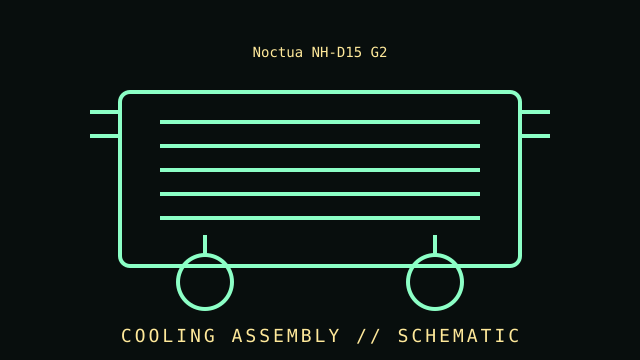

[ INDIVIDUAL COMPONENT // COOLING ]
Noctua NH-D15 G2
Successor-generation dual-tower cooler with revised fin geometry and two NF-A14x25r G2 PWM fans. Dual-tower premium air CPU cooler, 2024 generation.

IDENTIFICATION WARNING: Match the complete model, variant, revision, socket kit, and region to the product label and manufacturer manual. Do not assume the specifications apply to similarly named versions.
Specifications
| Catalog subcategory | Air CPU coolers |
|---|---|
| Catalog identity | Noctua NH-D15 G2 |
| Era / family | Dual-tower premium air CPU cooler, 2024 generation. |
| Heatsink design | Dual-tower aluminum fin stack with eight heatpipes; model dimensions and mass should be checked against Noctua documentation. |
| Fans | Two NF-A14x25r G2 PWM fans; fan speed, airflow, noise, and low-noise-adapter behavior depend on configuration. |
| Height and fit | 168 mm nominal cooler height; verify case clearance, memory clearance, PCIe placement, and board layout. |
| Socket support | Model-specific SecuFirm2+ mounting support for listed Intel LGA1851/LGA1700 and AMD AM5/AM4 platforms; verify the current compatibility list. |
| Variants | NH-D15 G2 LBC, standard, and HBC versions have different base geometry intended for differing CPU contact profiles; identify the complete variant before use. |
Compatibility, installation & service
- Confirm the exact socket kit, case clearance, board layout, mounting orientation, and manufacturer compatibility list before installation.
- Connect fans and pumps using the documented pinout and control cable; remain within the motherboard or controller header's electrical limits.
- Check fan direction, cooler contact, tubing or cable clearance, and temperature response at first startup.
- Do not open sealed liquid-cooling assemblies or continue operation after suspected leaks, abnormal pump noise, or loss of cooling.
Model-specific notes
NH-D15 G2 is not dimensionally or mechanically identical to the original NH-D15. Confirm the exact LBC, standard, or HBC package, socket kit, RAM clearance, and case height before installation. Use the included mounting hardware and installation manual for the particular variant.
Sources & further reading
- Noctua — NH-D15 G2 product specificationsManufacturer product page; verify the full product number and regional revision.
- Noctua — Compatibility centreManufacturer compatibility, support, or installation reference; model-specific documentation takes precedence.
Published thermal and acoustic performance depends on test setup, processor, case, fan control, and ambient conditions.